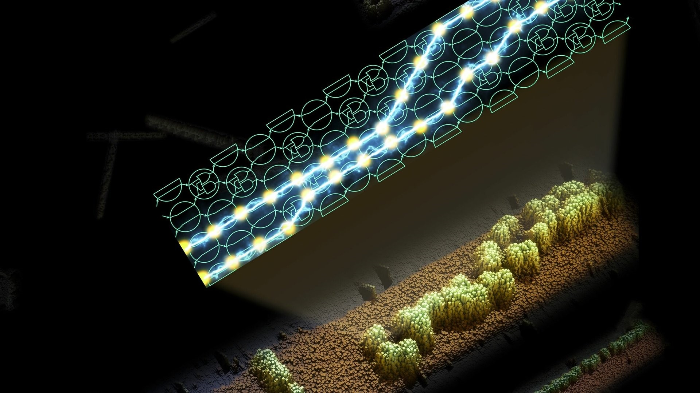

Биологические компьютеры - прорывная технология будущего
-
Биологические компьютеры - прорывная технология будущего
В 2019 году исследователи из Великобритании и США представили программируемый компьютер на основе ДНК, способный выполнять самые разные вычисления. Достижение описано в научной статье, опубликованной в журнале Nature.
Учёные давно работают над тем, чтобы приспособить этот процесс для вычислений и получить компьютер, работающий на молекулярном уровне. Однако пока не известно, насколько гибкой может оказаться такая система, можно ли будет в неё заложить какую угодно программу.
Авторы нового исследователя сделали ещё один шаг к универсальному ДНК-компьютеру. Они продемонстрировали систему, которая обрабатывает шестибитные числа. Авторы заложили в свой процессор 21 программу. В их числе были алгоритмы, выполняющие копирование введённого числа, распознавание чисел, кратных трём, и решающие другие простые, но от этого не менее важные задачи.